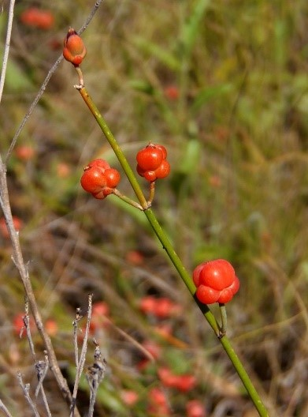

|

Кустарничек до 20 см выс. с ползучим корневищем и укороченным стеблем с темносерой корой;
веточки желтоватозеленые, раскидистые, прямые или чаще вверху изогнутые, тонкоребристые,
по ребрышкам мелко-бугорчатые, до 1 мм в диам.; междоузлия до 3 см дл.,
листья редуцированы до влагалищ, на молодых веточках буроватожелтых 1.5—2 мм дл.,
на одну треть (или до половины) надрезанных на две треугольные лопасти; пыльниковые колоски одиночные,
на ножках или почти сидячие, овальные с выставляющейся тычиночной колонкой, пыльников обычно 8;
плодущие колоски овальные на коротких (иногда до 2.5 см) ножках, одиночные или собраны в пучки,
с 3—4 прицветниками, из них нижние на одну треть сращенные, широко-овальные, притуплённые,
по краю узко-перепончатые, внутренние до половины сращенные, окружающие трубочку;
трубочка прямая до 1.5 мм дл. на краю с язычком; плод ягодообразный, шаровидный, 6—7 мм дл., красный;
cемена овальные или продолговато-овальные, 4.5—5.5 мм дл., по спинке внизу выпуклые, темнобурые.
Цветение: VI, плодоношение: VII.
Фотограф: Сергей Одинец |